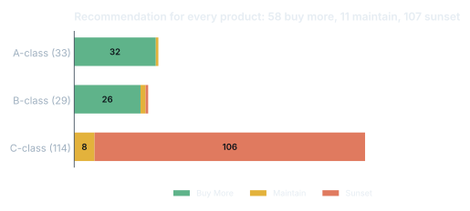
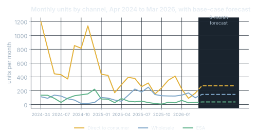

Inventory Optimization for Crafter.com
MSBA capstone for Crafter.com, an online craft-kit company. I was team lead for a team of 4.
01Problem
Crafter's system logged out-of-stock months as zero sales. Every forecast built on that history learned to expect too little, so the best sellers kept running out.
02Approach
Analyzed 564,780 order line items, found months where a product recorded zero sales because it was out of stock, and reconstructed 360 of them. Then compared Ridge, SARIMA, XGBoost and Random Forest with walk-forward validation, and ranked every product by revenue return per purchasing dollar.
03Impact
Random Forest won (out-of-sample R² 0.45, MAPE about 12%) and about 6% of hidden A-class demand was recovered. At a $15K budget the buy list funds 49 orders ($14.8K) expected to bring in $56.3K, a 3.8x return. Crafter now runs the whole cycle monthly in under 2 hours.
Try the dashboard I built for the client
Results



What I did
- Found that 62 of 176 products drive 95% of revenue, so the buy list focuses there; 107 slow sellers (under 3 units a year) were flagged to sunset and free up cash.
- Forecast 12-month demand by channel under three scenarios: conservative 4,647, base 5,466 and growth 6,285 units.
- Handed over 6 tools: the interactive dashboard, an Excel toolkit (buy list, reorder points and safety stock, vendor scorecard, KPIs, new-product entry), a purchasing SOP and two how-to guides.
- Recommended the data fixes that would lift accuracy next: weekly on-hand stock (only 13% tracked today), back-in-stock requests and clean wholesale tags.
Code
def reorder_plan(demand, demand_sd, lead_months, z=1.65, moq=25):
safety = math.ceil(z * demand_sd * math.sqrt(lead_months))
reorder_point = math.ceil(demand * lead_months + safety)
order_qty = max(moq, math.ceil(demand * (lead_months + 1) + safety))
return safety, reorder_point, order_qty
reorder_plan(17, 8, 2) # (19, 53, 70), the worked example in the client guide
buy = skus.assign(cost=lambda d: d.order_qty * d.cogs,
revenue=lambda d: d.order_qty * d.retail)
buy["return_per_dollar"] = buy.revenue / buy.cost
buy = buy.sort_values("return_per_dollar", ascending=False)
buy["decision"] = np.where(buy.cost.cumsum() <= budget, "FUND", "DEFER")